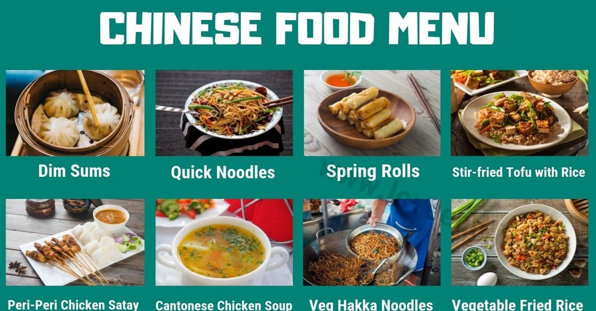

Select The Dishes

Here’s a list of popular Chinese dishes
Dumplings Steamed or fried dough filled with meat or vegetables.
Spring Rolls Crispy rolls filled with vegetables or meat.
Sweet and Sour Pork Pork in a tangy, sweet sauce.
Kung Pao Chicken Spicy chicken stir-fry with peanuts and vegetables.
Mapo Tofu Spicy tofu and minced meat in a flavorful sauce.
Peking Duck Crispy duck served with pancakes and hoisin sauce.
Fried Rice Stir-fried rice with vegetables, meat, or seafood.
Beef and Broccoli Beef stir-fried with broccoli in a savory sauce.
Hot and Sour Soup A spicy and tangy soup with mushrooms and tofu.
Chow Mein Stir-fried noodles with vegetables and meat.